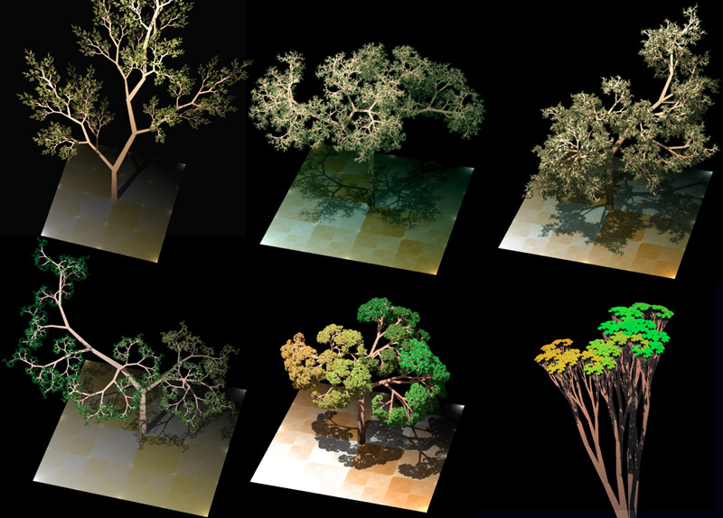
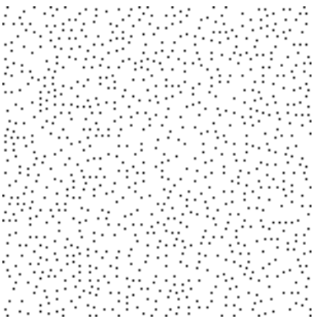

Bug Fixes And Tree Placement (11/11/2020)
For this week, I implemented some bug fixes with the camera and UI, added support for 5 custom terrain components, and began implementing object placements. Access web build here: link
2 Bug fixes + Terrain Support (5 hours)
The first fix I implemented was an issue with the UI components looking 3D like. Last week, some of the components of the UI, especially the color preview cube on the custom terrain selectors did not look flat with the 2D canvas. To fix this, I switched from a perspective camera (where objects have a discernable depth to them) with an orthographic camera (where all objects have the same depth):
What is happening in the camera's view is not scaled properly with the size of the canvas: causing the canvas to appear to be much smaller than the Perlin noise map. After being stuck on this for a while, I realized we just need to scale the camera size significantly.
The second fix was in regards to the custom terrain: even though the custom terrain is in the scroll rect, you could still see the color preview cubes not in view. To resolve this, I switched the cube with a png image. Due to the cube not being a UI component, it appears that is was not affected by the scroll rect:
During this, I had a frustrating error appear that was quite easy in hindsight to resolve: for some reason, the script I used for implementing the color picker was reporting that the reference to the image was undefined. It turns out that I had the old cube objects (now disabled) attached as public references for the script to use, which resulted in undefined behavior:
Luckily the fix was easy: update the public references to point to the images...
Custom Terrain
With those fixes out of the way, I added the support to add up to 5 pieces of custom terrain onto the generated map. To do this, I revised my implementation for making the components appear/disappear from the UI depending on what mode is selected. Now, the implementation accounts for a variable number of terrain. We keep track of an index to the currently activated terrain. If the slider value (when the function is called) is greater, we enable any components within the range of [current_index, slider_value]. If it is lower, then we disable components within the same range:We can now disable or enable any range of custom terrain depending on the slider value:
Next, I tested (modifying my data structures, setting up public references) to ensure that the new terrain componets interact correctly with the color map. At first, I got it to work with 4 custom terrain:
Then, I got the color map to work with 5 custom terrain objects. With my revised implementation, we could add much more in the future.
Tree Placement (1 hours)
With my remaining time, I looked into ways that we could procedurally place objects (ex. trees) onto the map. I came across a simple solution on one of my stakeholder's websites (red blob games). The idea behind this algorithm is that we we generate noise, then use a constant value to determine how spacious or clustered those values will be. The higher the value is, the more spacious the placement will be. For clustered points, we want lower values. The folowing screenshots show this effect as the constant value increases: This is a simple, but ineffient implementation of this idea:

My next steps will be to get the points indicated by the algorithm at "if(tree_noise[x,y] == maximum_noise)" onto the color map. Also, I will have to consider a better way to perform the placement: algorithms such as the Possion Disc are much more efficient and give a better placement of values.